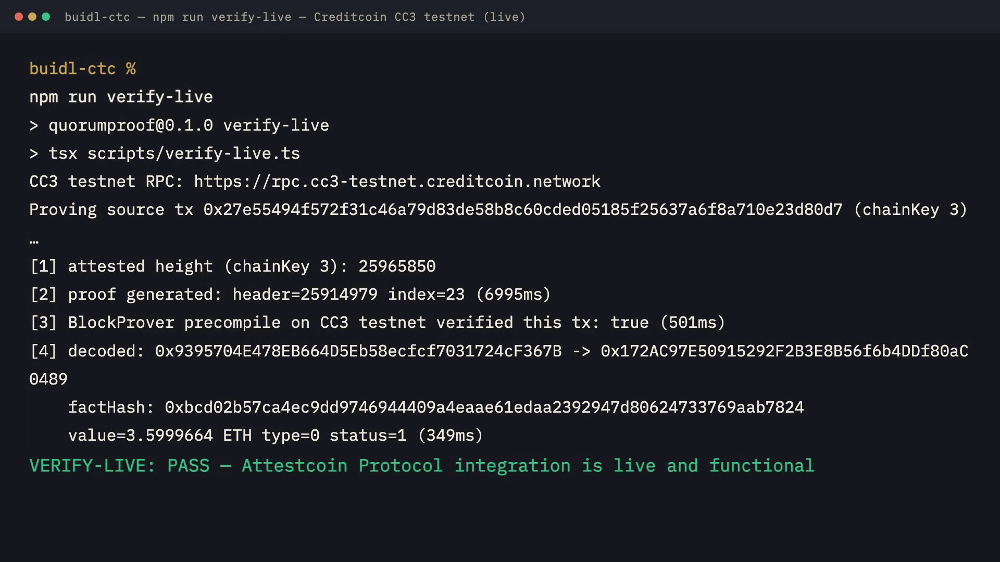

Exhibit A
fact not yet verified
| factHash | — |
|---|
awaiting proof
AI agents are about to move money on-chain.
One agent is just one confident voice holding the keys.
I’m not okay with that.
an agent fleet that reaches auditable decisions from attestcoin-verified cross-chain facts
CC3 TESTNET · ATTESTED HEIGHT 25,923,250
The Chamber · in re
| factHash | — |
|---|
awaiting proof
no ballots cast
no ballots cast
Awaiting proceeding
convene a proceeding to open the record
| decision | — |
|---|---|
| factHash | — |
| policyId | — |
| certHash | — |
| ballots | — |
| issued | — |

THE FLEET · THREE AGENTS, THREE MANDATES · EPHEMERAL SECP256K1 CONTROL KEYS
Spawned per session; every ballot is signed and locally audited, recoverable on-chain by QuorumRegistry.
| ledger-01 | deterministic · 0xd52A1316a576705869e204F3cE7b638C9Ff29A9c Conservative underwriter: exact-policy compliance or nothing. |
|---|---|
| sentinel-02 | deterministic · 0x7e5cF272e3305aDeA386D5c9A65Ff4e04e0AF65a Fraud & anomaly control: rules on transaction integrity only, never on policy fit. |
| meridian-03 | deterministic · 0xe5304a23cD80d6174dc8Cdb0b48c3979da311338 Market & timing analyst: partial repayments get weighted, not zeroed. |
an agent fleet that reaches auditable decisions from attestcoin-verified cross-chain facts
CC3 TESTNET · ATTESTED HEIGHT 25,923,250
The Chamber · in re
| factHash | 0xbcd02b57ca4ec9dd9746…7824 |
|---|---|
| source tx | 0x27e55494f572f3…80d7 |
| parties | 0x9395704E…367B → 0x172AC97E…0489 |
| value | 3.5999664 ETH |
| position | chainKey 3 · block 25,914,979 · tx #23 |
| receipt | status 1 · txType 0 |
| attested to | 25,923,250 (CC3 height at proof time) |
PROOF VERIFIED 2386MS · PRECOMPILE PASS 358MS · DECODE PASS 298MS · DELIBERATION 5MS
Awaiting proceeding
EXECUTE
convene a proceeding to open the recordQUORUM MET — 123/3 APPROVALS · ≥2 REQUIRED · MEAN CONFIDENCE 0.83
| decision | EXECUTE — quorum met |
|---|---|
| factHash | 0xbcd02b57ca4e…7824 |
| policyId | 0x96cecf5998e3…b359 |
| certHash | 0xa139ff31b394…8839 |
| ballots | 6 signed · audit clean |
| issued | 2026-09-07T05:08:07.190Z |
local enforcement — local enforcement: all ballots signature-verified; set QUORUMPROOF_REGISTRY_ADDRESS to submit the certificate on-chain (needs CC3 testnet gas from the faucet) · deterministic fleet
QP-001 · repayment-received · CERTIFICATE OF QUORUM DECISION
| decision | EXECUTE — quorum met |
|---|---|
| factHash | 0xbcd02b57ca4ec9dd97469444…7824 |
| policyId | 0x96cecf5998e33b8b0d723258…b359 |
| certHash | 0xa139ff31b39429c083e4c7b4…8839 |
| ballots | 6 signed · audit clean |
| issued | 2026-09-07T05:08:07.190Z |
local enforcement — local enforcement: all ballots signature-verified; set QUORUMPROOF_REGISTRY_ADDRESS to submit the certificate on-chain (needs CC3 testnet gas from the faucet) · deterministic fleet
an agent fleet that reaches auditable decisions from attestcoin-verified cross-chain facts
CC3 TESTNET · ATTESTED HEIGHT 25,923,250
The Chamber · in re
| factHash | 0xa7fa40b400f0122ef2c9…44a8 |
|---|---|
| source tx | 0x890dbaaf163716…c744 |
| parties | 0x03D16f4D…3b8a → 0xf30ba13e…0EB0 |
| value | 0.05686937 ETH |
| position | chainKey 3 · block 25,914,976 · tx #43 |
| receipt | status 1 · txType 2 |
| attested to | 25,923,250 (CC3 height at proof time) |
PROOF VERIFIED 1321MS · PRECOMPILE PASS 382MS · DECODE PASS 337MS · DELIBERATION 13MS
Awaiting proceeding
REJECT
convene a proceeding to open the recordQUORUM NOT MET — 1/3 APPROVALS · ≥2 REQUIRED · ACTION BLOCKED, CERTIFICATE RECORDED
| decision | REJECT — quorum not met |
|---|---|
| factHash | 0xa7fa40b400f0…44a8 |
| policyId | 0x96cecf5998e3…b359 |
| certHash | 0xe20d4dfea139…e598 |
| ballots | 6 signed · audit clean |
| issued | 2026-09-07T05:07:58.517Z |
local enforcement — local enforcement: all ballots signature-verified; set QUORUMPROOF_REGISTRY_ADDRESS to submit the certificate on-chain (needs CC3 testnet gas from the faucet) · deterministic fleet
QP-002 · unrelated-inflow · ROUND II — THE REVISED BALLOT, ON THE RECORD
ROUND II · ledger-01 DENY 0.90 · meridian-03 DENY 0.70
QUORUM NOT MET — 1/3 APPROVALS · ≥2 REQUIRED · ACTION BLOCKED, CERTIFICATE RECORDED
§ 1 · DOCKET OF PROCEEDINGS · CREDITCOIN CC3 TESTNET
| No. | cause | source tx | approvals | decision | certHash | convened |
|---|---|---|---|---|---|---|
| QP-002 | unrelated-inflow | 0x890dbaaf16…c744 | 1/3 (≥2) | REJECT | 0xe20d4dfe…e598 | 2026-09-07T05:07:58.517Z |
| QP-001 | repayment-received | 0x27e55494f5…80d7 | 3/3 (≥2) | EXECUTE | 0xa139ff31…8839 | 2026-09-07T05:08:07.190Z |
The decision becomes a Creditcoin fact that any lending protocol can consume.
QP-001 · FACT & PROOF DETAIL · BLOCKPROVER 0x…FD2 ON CC3
| factHash | 0xbcd02b57ca4ec9dd9746944409a4eaae61edaa2392947d80624733769aab7824 |
|---|---|
| from | 0x9395704E478EB664D5Eb58ecfcf7031724cF367B |
| to | 0x172AC97E50915292F2B3E8B56f6b4DDf80aC0489 |
| value | 3.5999664 ETH (3,599,966,400,000,000,000 wei) |
| txType | 0 |
| receipt status | 1 |
| factHash preimage | keccak256(chainKey ++ headerNumber ++ txHash ++ verified) |
| verification | verified — precompile staticCall |
|---|---|
| BlockProver | 0x…FD2 on CC3 testnet (eth_call/staticCall) |
| proof build | 2386 ms — hosted Attestcoin Proof Builder (testnet) |
| precompile verify | 358 ms — verifySingle() staticCall against 0x…FD2 |
| on-chain decode | 298 ms — EvmV1Decoder 0x731c…9f9f (eth_call) |
| merkle root | 0x031ba8cccbe081fc…c867 |
| merkle siblings | 8 entries |
| continuity | lower-endpoint 0xf7216ad3…4267 · 22 roots |
QP-001 · EVERY BALLOT SIGNED · SECP256K1 · RECOVERED ON-CHAIN BY QUORUMREGISTRY
Round II ballots, signature on the record — bound to factHash 0xbcd02b57ca…7824
QP-001 · RAW PROOF BYTES — TXBYTES AS PROVEN INTO THE CC3 PRECOMPILE
0x0000000000000000000000000000000000000000000000000000000000000000000000000000000000000000000000000000000000000000000000000000004000000000000000000000000000000000000000000000000000000000000000030000000000000000000000000000000000000000000000000000000000000060000000000000000000000000000000000000000000000000000000000000018000000000000000000000000000000000000000000000000000000000000002200000000000000000000000000000000000000000000000000000000000000100000000000000000000000000000000000000000000000000000000000000000d00000000000000000000000000000000000000000000000000000000000052080000000000000000000000009395704e478eb664d5eb58ecfcf7031724cf367b0000000000000000000000000000000000000000000000000000000000000000000000000000000000000000172ac97e50915292f2b3e8b56f6b4ddf80ac048900000000000000000000000000000000000000000000000031f5a65e0b57800000000000000000000000000000000000000000000000000000000000000000e000000000000000000000000000000000000000000000000000000000000000000000000000000000000000000000000000000000000000000000000000000080000000000000000000000000000000000000000000000000000000005f5e100000000000000000000000000000000000000000000000000000000000000000258888de9217ca377251f157eedf17fae9e1d393df45bc4164f0a30b5394802a31105808aaea86aea8b78c611b4249ebf2af2acaafd8b434aad47a4d5b720ee5ba00000000000000000000000000000000000000000000000000000000000001c000000000000000000000000000000000000000000000000000000000000000010000000000000000000000000000000000000000000000000000000000005208000000000000000000000000000000000000000000000000000000000000008000000000000000000000000000000000000000000000000000000000000000a00000000000000000000000000000000000000000000000000000000000000000000000000000000000000000000000000000000000000000000000000000010000000000000000000000000000000000000000000000000000000000000000000000000000000000000000000000000000000000000000000000000000000000000000000000000000000000000000000000000000000000000000000000000000000000000000000000000000000000000000000000000000000000000000000000000000000000000000000000000000000000000000000000000000000000000000000000000000000000000000000000000000000000000000000000000000000000000000000000000000000000000000000000000000000000000000000000000000000000000000000000000000000000000000000000000000000000
The fleet replaces the oracle. The paper trail is the product.
auditable autonomous decisions on the Attestcoin Protocol · Creditcoin CC3 testnet · BlockProver 0x…FD2 precompile
BUIDL CTC 2026 Fall · AI track
Edited with Kinocut · kinocut.dev